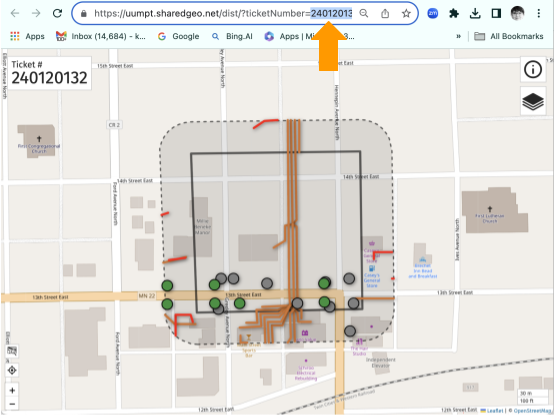
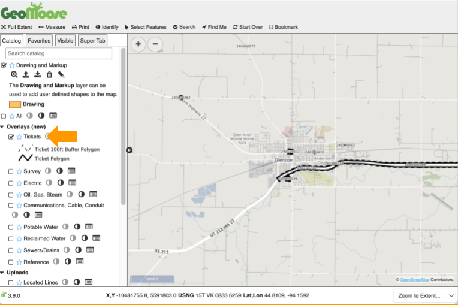
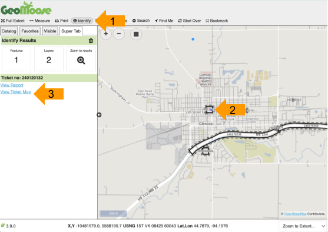

Getting Started
- FuzionView is currently in Beta testing. There are two ways to access the tool:
With a known GSOC ticket number
From the GeoMoose application, without a ticket number
I have a ticket number
To access the Ticket Viewer with a ticket number, start at:
https://uumpt.sharedgeo.net/dist/?ticketNumber=240041209.
In the address bar, replace the example ticket number with your ticket number and hit enter to open the desired ticket.

FuzionView Ticket Viewer
I need to find a ticket number
If you don’t have a ticket number to test, use the GeoMoose application to select a ticket.
Begin on the UUMPT site: https://uumpt.sharedgeo.net
Turn on the Tickets overlay in the Catalog tab.

Turn on the Tickets layer on the GeoMoose Landing Page
- Follow these steps to open the Ticket Viewer:
Zoom in to see available tickets. Then:
Select Identify in the toolbar.
Select any ticket boundary.
Select View Ticket Map to open the Ticket Viewer.

Select a ticket to open in Ticket Viewer